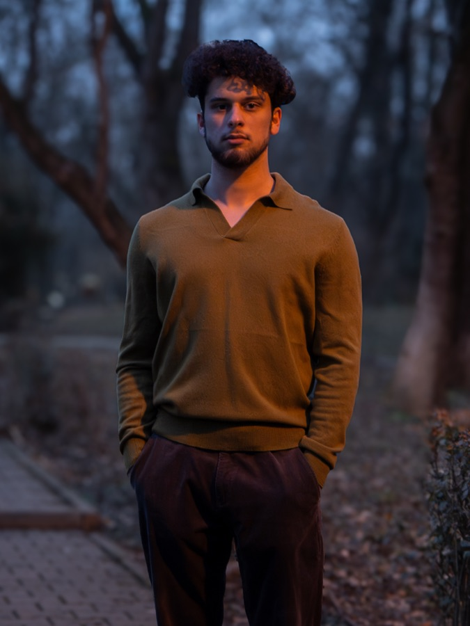

YOUR JOURNEY,
YOUR CLARITY,
YOUR ACTION.
Coaching pentru tineri care s-au pierdut pe drum, ca să găsești claritate, sens și curajul primului pas.
Dacă ai între 18 și 28 de ani
Citește asta
-
M-am trezit într-un punct în care nu știu ce urmează, și întrebarea asta mă apasă mai mult decât aș vrea să recunosc.
-
Vreau schimbare, dar nu știu de unde să încep, și cu fiecare zi care trece, indecizia devine mai grea.
-
Mă compar des cu ceilalți și ies în pierdere, parcă toți au un plan, o direcție, o certitudine pe care eu nu o simt.
-
Am senzația că toți știu ce vor să facă în viață, doar eu nu, și asta mă face să mă îndoiesc de mine însumi.
Dacă te regăsești în cel puțin una dintre afirmațiile de mai sus, nu mai amâna!
Rezervă o ședință gratuităDe ce eu

Și eu am trecut prin aceeași incertitudine.
Când am terminat liceul la 19 ani, nu aveam habar ce vreau să fac mai departe. Eram deschis la orice și tocmai valul ăsta de opțiuni nelimitate m-a făcut să îngheț de frică, întrebându-mă: «Și acum ce?»
- Formare coaching: 1,5 ani
- 40+ ore de sesiuni
- Psihologie, Univ. Titu Maiorescu 2026
- Mentor: Mioara Șoldan MCC
Gata să faci primul pas?
Prima ședință de cunoaștere este gratuită: 90 de minute în care vorbim, fără angajamente.
Rezervă acum, e gratuit